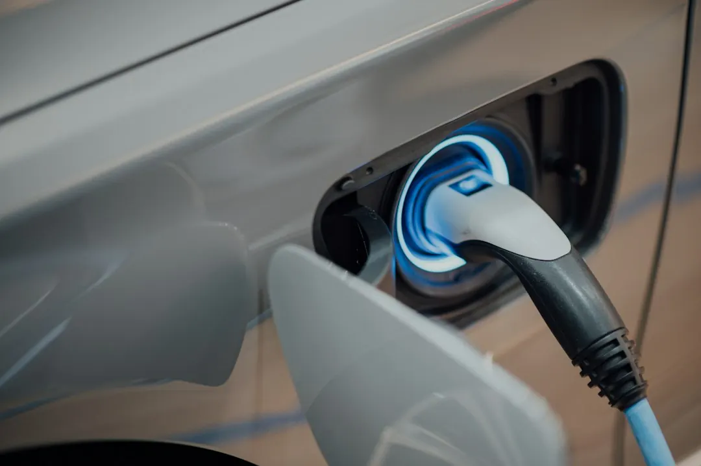

Three practical cost drivers are the charger, the distance from the switchboard to the parking space, and any electrical upgrades. Access along the cable route can also change the work involved. An electrician should assess the home's wiring and available capacity before installation. The completed job should include electrical testing, charger setup and a control demonstration. Ask for the charger, installation work, upgrades and support arrangements to appear separately in the quote.
For homeowners comparing ev charger installation cost perth options, the useful starting point is the relationship between the vehicle, parking position, charger and electrical capacity.
Ev Charger Installation Cost Perth Explained
EV Charger Installation Perth describes the work as a combination of parking position, cable route and available electrical capacity. A charger that suits the vehicle may still need a different circuit or route at the property.
Before requesting a quote, identify where the vehicle parks, where the switchboard is located and how the cable could travel between them. Note walls, driveways, shared areas and any access restrictions. The distance helps establish the installation work, while the route may affect whether walls need opening.
- Record the usual overnight parking position.
- Identify the switchboard and likely cable path.
- Note shared driveways, apartment access and property restrictions.
- List appliances that may operate while charging.
WA guidance recommends an electrician assess whether the home wiring can support the extra charging demand. A new charging power point or dedicated charger requires a licensed electrician.
Separate equipment from electrical work
A quote should distinguish the charger from the work needed to connect it. Equipment already purchased still needs to suit the vehicle, its charging connection and the circuit supplying it. The vehicle charging limit and the home's available capacity both affect the suitable setup.
AC equipment supplies power that the vehicle converts for its battery. DC equipment converts power outside the vehicle. Faster charging therefore depends on the charger, the vehicle and the electrical power the property can supply.
Ask for the proposed equipment, charging rate, circuit arrangement and property assumptions to be stated clearly. If an upgrade is considered, the quote should explain what the electrician found and how that changes the installation.
Match charging to the property
Daily driving helps establish how much charging is needed overnight. The charging rate also needs to remain within what the vehicle and circuit can support. Explain when the car is normally available and whether another charger may use the same supply.
Solar charging links vehicle demand with rooftop generation and household use. Compatible controls can use surplus rooftop generation after household demand is met. Load management can reduce charger draw when appliances need power, while compatible software may allow scheduled charging or electricity use tracking.
Apartment charging may require approval to use shared property. A cable route across a common driveway must account for access through that space. Workplace and fleet arrangements depend on when vehicles return and how long they remain parked, so that pattern belongs in the project description.
Check testing, support and faults
The agreed work should include electrical testing, charger setup and an explanation of the controls. Documentation supplied with the work, support arrangements and any workmanship warranty should be identified before approval.
Repeated charger errors should be diagnosed before replacement equipment is chosen. The cause may involve the charger, its settings or the electrical supply. An electrician can investigate the fault on site and explain the repair options.
Before everyday use, ask what was tested, which controls were configured and what information will be left with the homeowner. If an upgrade is included, ask why it is needed and which part of the installation it changes.
Who this guide applies to
This guide suits Perth and surrounding suburb homeowners considering a charger, assessing equipment they already own or reviewing why an installation quote varies. It also applies to apartment residents with an allocated bay, households combining charging with rooftop solar, and workplaces or fleets where vehicles remain parked for set periods.
The same questions can support projects in Northbridge, East Perth, West Perth, Highgate, South Perth, North Perth, Leederville, West Leederville, Mount Lawley, Burswood, Subiaco, Victoria Park, Kensington, Menora and Maylands. The assessment remains specific to the parking space, cable route and electrical supply.
For a broader local overview, read the Perth EV charger installation guide. Use the property details, vehicle and charging routine when asking for a quote.
- Describe the parking position. State where the vehicle parks, where the switchboard sits and whether the route crosses walls, driveways or shared areas.
- List the equipment. Give the electrician the charger model or intended type, vehicle connection and usual charging routine.
- Request a capacity assessment. Ask whether the switchboard and wiring can carry the added demand alongside household appliances.
- Review the quote. Check that the charger, cable route, testing, setup, possible upgrades and support arrangements are explained separately.
- Confirm handover. Ask for the testing outcome, control demonstration and documentation before relying on the charger.
| Choice | Check | Why it matters |
|---|---|---|
| Charger | Vehicle connection and charging limit | Confirms the equipment suits the car |
| Location | Switchboard to parking distance | Indicates cable and access work |
| Supply | Available capacity and appliances | Shows whether controls or upgrades may be needed |
Common questions
What determines the installation cost? The main cost signals are the charger, access, the distance from the switchboard to the parking space and any electrical upgrades. A property assessment can establish a suitable cable route.
Can an existing switchboard support a charger? It may, but capacity needs an electrical assessment because charging adds demand alongside appliances already running in the home. Load management can reduce charger draw when available power is limited.
Can a charger I already own be installed? It can be considered, but it still needs to suit the vehicle, charging connection and supplying circuit. The electrician should assess the equipment before installation.
Does solar change the installation? Solar charging links vehicle demand with rooftop generation and household use. Compatible controls may use surplus generation after household demand is met.
What should happen if the charger shows repeated errors? Diagnosis should come before replacement. The issue may involve the equipment, settings or electrical supply, so an electrician can investigate and explain repair options.
What is different about apartment charging? An allocated bay may involve approval to use shared property. A cable route across a common driveway also needs to account for access through that space.
This guide covers charger selection, property assessment, quote inputs, charging scenarios, testing and fault questions for Perth installations.